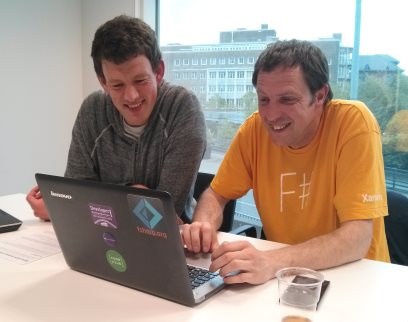
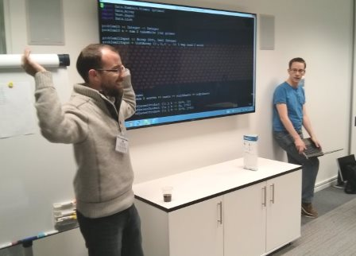
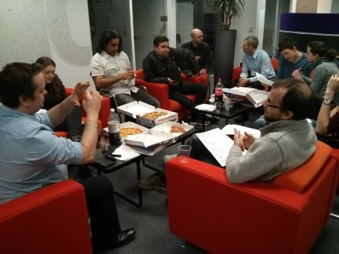
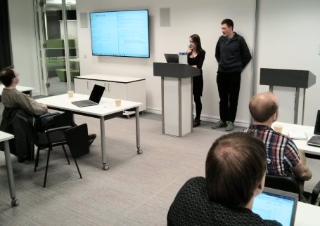
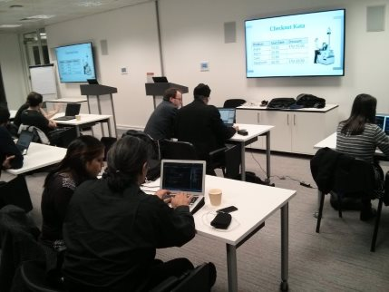

Try a Language: F# - Wednesday 3rd June 2015
In a variation on our normal format, in this session we all put down our usual programming tools of choice and had a go at F#, .Net's functional language.
I gave an overview of the language and Chris Dobson put together some interesting exercises based on creating 3D objects, which certainly helped make learning fun!
There was a good turnout of 20-odd people, and most seemed to enjoy the it, so we might do more 'try a language' sessions in the future. If you'd like to come and guide us through your favourite language, get in touch!
The slides and exercises, as well as some people's solutions, are on github.
Take it to the Bank - Wednesday 6th May 2015
This month, we had a go at the Bank OCR Kata, closely based on the oringinal problem from codingdojo.org.
It was a fairly difficult problem with four distinct sections, but many pairs managed to get the first three finished. It was also a challange to tackle with TDD, because it was often difficult to identify and take small steps - but a good learning experience. At least one coder finished off part 4 afterwards!
There were solutions in Elixir, F#, Java, Haskell, Python and C#. Some of them can be found on github.
Coding Problems: Project Euler - Wednesday 1st April 2015
There are many ways to get better at coding, but a sure bet is to have a go at some coding problems. And as collections of coding problems go, they don't get much more classic than Project Euler!
Project Euler is a website which contains several hundred maths-oriented programming problems, arranged roughly from easiest to hardest. It takes it's name from Leonhard Euler
In April's session, we had a go at some of the problems using Java, F#, Haskell, Scheme and more. There was head scratching, there was googling, there were all sorts of ways to generate prime numbers, but most importantly there was fun!
Go and check out the solutions on github to see the results.
Recursion: See Recursion - Wednesday 4th March 2015
In this session, we had a crack at writing some recursive algorithms, commonly used in functional programming but also a good fit for many typical problems.
There were a variety of exercises for different levels of familiarity with recursion, from summing a list of numbers through to tail-call-optimised continuation-based mind-benders!
The group got on well, with everyone getting the hang of the basics of recursion and several pairs doing the more advanced exercises.
The slides are on prezi, and the solutions are up on github, as usual.
Checkout Kata - The Redoux! - Wednesday 4th February 2015
For our second session of 2015, we had another go at the Checkout Kata. Since most of the group had done it before, this gave people a chance to try something different - an alternative approach to the problem, a new language, a different coding partner, and so on.
There was a great mix of languages, including a Leeds Code Dojo first appearance for Elixir and Go, with Scala, F#, Haskell and C# also on show.
Some interesting solutions got coded up, and Adam and Matt even managed to get the extended requirements working with their Scala implementation.
Go and check out the solutions on github.
Checkout Kata - Wednesday 7th January 2015
To kick 2015 off, we had a go at the Checkout Kata, a classic TDD problem with a variety of possible implementations.
It was our best turnout so far with 20 people, and as usual we had a good variety of languages present - JavaScript, F#, Haskell, Lisp, Java, and C# - and quite a few people tried something new.
There were a good variety of solutions implemented, with the discounts being calculated using pure maths, arrays of functions, pattern matching, objects, and more. Variety, as they say, is the spice of life!
The github repo from the night has a few of the solutions, why not take a look!

Refuctoring - Wednesday 3rd December 2014
In this session, the group enjoyed coding up a nice, clean solution to FizzBuzz before mercilessly refuctoring it into an unrecognisable pile of tangled ASCII! (Or in some cases, Unicode..)
The solutions started out in Java, C#, F# and Haskell, but by the end could barely have been recognised as such by the language designers themselves. There were many devious crimes against programming such as code which would only work one day of the month, source written in a variety of Unicode symbols, y-combinator abominations and plain old bad naming.
We learned a few things about programming, and more importantly, had a lot of fun.
Go and have a look at some of the solutions on github - if you dare!

The Pipe Packing Challenge - Thursday 6th November 2014
In a coding session that took inspiration from the last leeds sharp session, five pairs of us wrote algorithms to try and solve a simplified version of the bin packing problem.
There were once again many languages in effect - Erlang, F#, C# and Haskell - and all of the pairs had a working solution by the end. Most ended up with a 'First Fit' algorithm, which does a pretty good job of finding a solution to this NP-Hard problem without taking the age of the universe to run..
Most of the solutions are up on github - go check them out!

Build you a Skynet - Wednesday 1st October 2014
We worked in twos and threes to write Machine Learning algorithms based on the k-nearest neighbours algorithm. The group did well, with almost everyone getting a working solution, and some teams getting to over 90% accuracy with their digit classification!
There were several languages in use - F#, Objective C, Scala, C#, and Python, and again a few people got involved with a new language, well done to them.
Have a look at some of the solutions on github.

Word Wrap Kata - Wednesday 3rd September 2014
We paired up to tackle another problem using TDD and Pair Programming, this time looking at implementing a Word Wrap algorithm. This takes a line of text and wraps it to a certain length - similar to how Notepad and other text editors work.
As usual, there were several languages in use - C#, Python, and PHP, with a couple of folk trying out something new. We also tried out the 'test list' technique, where you maintain a list of tests throughout the session, crossing them off and adding more as you go.
The problem proved fairly interesting, with a few different techniques emerging - recursion seemed to work well and produce fairly simple solutions, and some people chose to return collections of strings with others going for a block of text. The initial choice of test (and therefore implementation path) seemed to have quite a bit impact on how easy it was to get to a working solution.
Go and see the solutions on github

Fore! A nice round of Code Golf: Tuesday 5th August 2014
We had a great round of code golf, with several languages represented - C#, Ruby, Python and Haskell. We coded up solutions to output the '99 bottles' song, then made them as small as possible!
As you might predict, the Ruby and Python solutions were initially much smaller at 400-odd characters, but it was quite a struggle to get them down to the ultimate winner at 257 characters. The C# and Haskell solutions on the other hand started out much larger at 1000-plus chars, but ended up only 50 or so characters behind the scripting languages. It was an exciting race to the finish line!
A couple of the solutions are up on github - go and be impressed!

The Dojo Opens: Wednesday 9th July 2014
The first Leeds Code Dojo went really well – 17 people joined in, from a variety of different backgrounds and of various skill levels, so a great response. The Callcredit boardroom was pretty much at capacity, we might need to get a bigger room for the next one!
We worked in pairs on the ‘Kata Potter’ programming problem, practising the skills of TDD and Pair Programming. It was great to see a number of languages being used, including C#, F#, Ruby, Python, and PHP, with a few people trying out a new language for the first time.
Several of the solutions are up on github - go check them out!